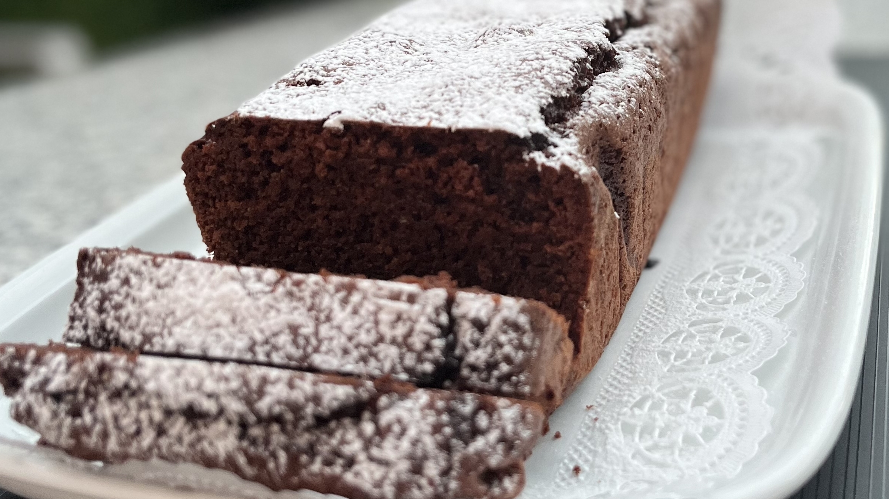

- 500g Flouer
- 500g Sugar
- 250g Melted Butter
- 2 Large Eggs
- 11⁄2 tsp. Baking Poweder
- Preheat the oven to 250°C
- Add the Flouer and Baking Powder into a bowl and wisk to combine them.
- Melt the butter and slowly add it to the sugar mixing constantly.
- Combine the Flouer and Baking Powder mix with the sugar and butter mix, stir well until homogeneous. Add both eggs and mix well.
- Pour into a pre-oiled baking dish and place it into the pre-heated oven for 30min.
- Let cool on a wired rack and optionally dust with powdered sugar.